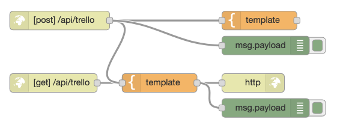
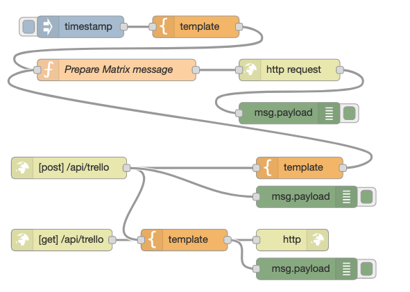

Trello-webhooks via NodeRed¶
Het HTTP-protocol is een client-server protocol, waarbij het initiatief voor de communicatie altijd bij de client ligt. Dit betekent dat de server niet op een willekeurig moment een bericht naar de client kan sturen.
Voor samenwerkende toepassingen heb je soms twee-richtingsverkeer nodig, waarbij elke partij het initiatief kan nemen tot de communicatie. Denk in het geval van Trello bijvoorbeeld aan een verandering in een bord via een gebruiker: daar wil je een toepassing die aan Trello gekoppeld is direct van op de hoogte kunnen stellen.
Een veel-gebruikte aanpak hiervoor vormen webhooks: je kunt aan Trello een URL (webhook) opgeven waar Trello een HTTP-request naar stuurt bij een bepaalde gebeurtenis, bijvoorbeeld een verandering in een bord.
Een probleem is dat de toepassing dan zelf een API-URL moet hebben. Dit betekent dat je een server nodig hebt in het publieke internet.
Voor demonstratie/experimenteerdoeleinden zijn er meerdere manieren om een (tijdelijke) server te maken. Dit kan met NodeRed, zoals we hier zullen doen; of bijvoorbeeld met glitch (glitch.com).
In het onderstaande voorbeeld maken we met NodeRed een server die Trello koppelt aan Matrix: bij een actie op een gegeven Trello-bord krijg je een bericht in Matrix.
We zullen dit voorbeeld in een aantal stappen uitwerken:
NodeRed: het versturen van een bericht vanuit NodeRed naar Matrix.
NodeRed: webserver met GET en POST, die we vanuit Jupyter testen.
Installeren van de webhook bij Trello
NodeRed¶
In NodeRed (https://nodered.org) kun je op een grafische manier verschillende diensten en API’s koppelen. Je kunt een webserver maken, voor het afhandelen van HTTP-requests. En je kunt HTTP-requests versturen naar andere servers. Daarnaast kun je allerlei andere internet-protocollen gebruiken, zoals UDP, TCP en MQTT.
Op een Raspberry Pi kun je de hardware-pinnen besturen vanuit NodeRed.
NodeRed is open source software. Je kunt dit op je eigen laptop installeneren, of op een server in het internet. NodeRed is onderdeel van de standaard-distributie voor de Raspberry Pi.
Voor de volgende opdrachten heb je een installatie van NodeRed nodig die vanuit het publieke internet bereikbaar is. (Waarschijnlijk voldoet NodeRed op je eigen laptop niet aan die voorwaarde.) De beschrijving hieronder is gebaseerd op de online NodeRed-dienst FRED (https://fred.sensetecnic.com); je kunt daar een gratis account aanmaken, dat geeft voor deze opdrachten voldoende mogelijkheden.
Als eerste stap maak je nu van een test-flow voor Matrix.
NodeRed naar Matrix¶
Vanuit NodeRed kun je HTTP-requests versturen naar Matrix. Voor het versturen van tekst-berichten moet je een token hebben. Dit token krijg je door in te loggen bij Matrix, zie het hoofdstuk over Matrix.
Daarnaast heb je de identificatie van een room nodig waarvoor je als gebruiker aangemeld bent.
Voor de volgende stappen heb je dus nodig:
je Matrix username
je Matrix password
een Matrix roomid
Credentials node¶
Deze gegevens vul je in in een “credentials” node. Bij het kopiëren van deze node worden deze gegevens niet meegekopieerd, zodat deze niet zomaar uitlekken. Deze node moet je eerst installeren.
In FRED:
selecteer in de FRED sidebar (donkere zijbalk links): Add or Remove Nodes
zoek (bij “search nodes”) naar “Credentials”
vink de Credentials-node aan
herstart je FRED NodeRed virtuele machine
Importeren van de test-flow¶
Je importeert deze als volgt in NodeRed:
kopieer de onderstaande JSON-code (“Copy”)
ga naar het NodeRed-venster
selecteer in het hamburger-menu rechts boven: Import
“Paste” de JSON-code in het venster
en klik op de “Import” button
Als het goed is heb je nu een tab gekregen met als naam “Matrix test-flow”, met deze flow.
[{"id":"2d7b69c0.da1286","type":"tab","label":"Matrix test-flow","disabled":false,"info":""},{"id":"9ae15617.f83318","type":"inject","z":"2d7b69c0.da1286","name":"","topic":"","payload":"","payloadType":"date","repeat":"","crontab":"","once":false,"onceDelay":0.1,"x":116,"y":120,"wires":[["20d4553d.d3444a"]]},{"id":"a4809466.7d1468","type":"http request","z":"2d7b69c0.da1286","name":"","method":"use","ret":"txt","paytoqs":false,"url":"","tls":"","persist":false,"proxy":"","authType":"","x":406,"y":200,"wires":[["88ea5a68.11419"]]},{"id":"15b879aa.461a3e","type":"debug","z":"2d7b69c0.da1286","name":"","active":true,"tosidebar":true,"console":false,"tostatus":false,"complete":"false","x":466,"y":260,"wires":[]},{"id":"237fafd1.56a5c8","type":"function","z":"2d7b69c0.da1286","name":"Prepare Matrix login","func":"request_data = {\n \"identifier\": {\n \"type\": \"m.id.user\",\n \"user\": msg.matrix_username\n },\n \"initial_device_display_name\": msg.matrix_username,\n \"password\": msg.matrix_password,\n \"type\": \"m.login.password\"\n}\nreq = {};\nreq.url = 'https://matrix.org/_matrix/client/r0/login';\nreq.method = \"POST\";\nreq.payload = request_data;\nreturn req;\n","outputs":1,"noerr":0,"x":156,"y":200,"wires":[["a4809466.7d1468"]]},{"id":"5507de0a.5634d8","type":"inject","z":"2d7b69c0.da1286","name":"","topic":"","payload":"","payloadType":"date","repeat":"","crontab":"","once":false,"onceDelay":0.1,"x":116,"y":380,"wires":[["a62dbb0f.760d68"]]},{"id":"d89e8191.235fa8","type":"http request","z":"2d7b69c0.da1286","name":"","method":"use","ret":"txt","paytoqs":false,"url":"","tls":"","persist":false,"proxy":"","authType":"","x":406,"y":440,"wires":[["81074d70.ba47e"]]},{"id":"81074d70.ba47e","type":"debug","z":"2d7b69c0.da1286","name":"","active":true,"tosidebar":true,"console":false,"tostatus":false,"complete":"false","x":406,"y":500,"wires":[]},{"id":"df0f9101.e7d3d8","type":"function","z":"2d7b69c0.da1286","name":"Prepare Matrix message","func":"token = flow.get(\"matrix_token\")\nroomid = flow.get(\"matrix_roomid\")\ntxnr = flow.get(\"txnr\")||0\ntxnr = txnr + 1\nflow.set(\"txnr\", txnr)\nreq = {}\nreq.url = `https://matrix.org/_matrix/client/r0/rooms/${roomid}/send/m.room.message/${txnr}?access_token=${token}`\nreq.method = \"PUT\"\nreq.payload = msg.payload\nmsg = req\nreturn msg;\n","outputs":1,"noerr":0,"x":166,"y":440,"wires":[["d89e8191.235fa8"]]},{"id":"a62dbb0f.760d68","type":"template","z":"2d7b69c0.da1286","name":"","field":"payload","fieldType":"msg","format":"json","syntax":"mustache","template":"{\n \"body\": \"Hello from FRED/NodeRed\",\n \"msgtype\": \"m.text\"\n}","output":"json","x":276,"y":380,"wires":[["df0f9101.e7d3d8"]]},{"id":"c566724a.71251","type":"function","z":"2d7b69c0.da1286","name":"save token","func":"if (msg.statusCode == 200) {\n token = msg.payload.access_token;\n flow.set(\"matrix_token\", token);\n} else {\n flow.set(\"matrix_token\", \"no-token\");\n}\nreturn msg;","outputs":1,"noerr":0,"x":266,"y":260,"wires":[["15b879aa.461a3e"]]},{"id":"20d4553d.d3444a","type":"credentials","z":"2d7b69c0.da1286","name":"Matrix-credentials","props":[{"value":"matrix_username","type":"msg"},{"value":"matrix_password","type":"msg"},{"value":"matrix_roomid","type":"flow"}],"x":306,"y":120,"wires":[["237fafd1.56a5c8"]]},{"id":"88ea5a68.11419","type":"json","z":"2d7b69c0.da1286","name":"","property":"payload","action":"","pretty":false,"x":106,"y":260,"wires":[["c566724a.71251"]]}]
Invullen van de credentials¶
De volgende stap is het invullen van de credentials:
double-click op de node Credentials, om deze te configureren
vul je Matrix-username in als “value” bij
flow.matrix_usernamevul je Matrix-password in als “value” bij
flow.matrix_passwordvul de
roomidin als “value” bijflow.matrix_roomidklik op “Done”
Uitvoeren van de test-flow¶
Je kunt nu deze test-flow uitvoeren:
klik op “Deploy” (rode knop rechtsboven)
genereer het token: klik op de knop (links) van de bovenste Insert-node.
stuur een message: klikop de knop van de onderste Insert-node
Let goed op de uitvoer in het Debug-window (Debug-tab, “kevertje”, rechter zijbalk). Hier moet je eerst de uitvoer zien met het token. En na het versturen van de tekst-message krijg je daar de ID van dit bericht.
Als het goed is resulteert dit in een bericht naar Matrix.
Stap 2: Maken van een NodeRed-webserver¶
De volgende stap is het maken van een webserver in NodeRed waarmee Trello berichten naar Matrix kunt sturen.
Hiervoor gebruik de volgende flow:

Importeer deze flow onder de nodes van de Matrix test-flow:
Kopieer (Copy) de JSON-tekst hieronder
Importeer in NodeRed: Hamburgermenu->Import; Paste; positioneer onder de bestaande flow
Deploy (rode knop rechtsboven)
[{"id":"8751025a.af47a8","type":"http in","z":"b715399a.8f6e38","name":"","url":"/trello","method":"get","upload":false,"swaggerDoc":"","x":90,"y":420,"wires":[["91fb06ba.e73458"]]},{"id":"2caf303.9b1ee5","type":"http response","z":"b715399a.8f6e38","name":"","statusCode":"","headers":{},"x":410,"y":420,"wires":[]},{"id":"af0c367e.43676","type":"http in","z":"b715399a.8f6e38","name":"","url":"/trello","method":"post","upload":false,"swaggerDoc":"","x":100,"y":320,"wires":[["cdb30e1d.3cfd58","91fb06ba.e73458","58ae857.817917c"]]},{"id":"cdb30e1d.3cfd58","type":"template","z":"b715399a.8f6e38","name":"","field":"payload","fieldType":"msg","format":"handlebars","syntax":"mustache","template":"{\n \"body\": \"Actie op bord {{payload.model.name}} - via FRED!\",\n \"msgtype\": \"m.text\"\n}\n","output":"json","x":420,"y":320,"wires":[["60087ea7.1600d"]]},{"id":"91fb06ba.e73458","type":"template","z":"b715399a.8f6e38","name":"","field":"payload","fieldType":"msg","format":"handlebars","syntax":"mustache","template":"OK.","output":"str","x":260,"y":420,"wires":[["2caf303.9b1ee5","8a3a8d7d.f18c4"]]},{"id":"8a3a8d7d.f18c4","type":"debug","z":"b715399a.8f6e38","name":"","active":true,"tosidebar":true,"console":false,"tostatus":false,"complete":"false","x":430,"y":460,"wires":[]},{"id":"58ae857.817917c","type":"debug","z":"b715399a.8f6e38","name":"","active":true,"tosidebar":true,"console":false,"tostatus":false,"complete":"false","x":430,"y":360,"wires":[]}]
Je kunt nu de NodeRed-webserver testen vanuit Jupyter Notebook. Hiervoor heb je nodig:
je FRED username
je FRED password
Let op: je moet je FRED username gebruiken, niet het email-adres waaronder je bij FRED bekend bent. Deze username staat onder je volledige naam linksboven, in de FRED-zijbalk.
import requests
import json
import urllib
Testen van de webserver¶
Met het volgende script kun je deze webserver testen. Je hebt in de URL je FRED username/password nodig. Je hebt hier een username/password nodig omdat de API van NodeRed in de gratis versie niet publiekelijk toegankelijk is.
Omdat in een password allerlei bijzondere tekens kunnen voorkomen, zoals “@” of “&”, gebruiken we daarvoor de url-encoding. Daarbij worden deze bijzondere tekens omgezet in “%40” of “%26”, enz. (Je ziet dat mogelijk weleens in een URL.)
Het GET-request wordt straks door Trello gebruikt om te controleren of de URL werkt.
fred_username = input("FRED username? ")
fred_password = input("FRED password? ")
r = requests.get("https://{user}:{passwd}@{user}.fred.sensetecnic.com/api/trello".format(
user = fred_username,
passwd = urllib.parse.quote(fred_password)
))
r.status_code
Controleer in het NodeRed debug-venster of dit request aangekomen is.
Test: POST-URL¶
De volgende stap is het testen van de POST-URL die straks door Trello gebruikt gaat worden. We hebben dan ook een JSON-payload nodig met de informatie die straks in het Matrix-bericht moet komen, in dit geval de naam van het Trello-bord.
model_data = {
"model": {"name": "Jupyter Notebook test"}
}
res = requests.post("https://{user}:{passwd}@{user}.fred.sensetecnic.com/api/trello".format(
user = fred_username,
passwd = urllib.parse.quote(fred_password)
),
json = model_data
)
res.status_code
Controleer in het NodeRed debug-venster of dit request met de payload aangekomen is.
Webserver-flow koppelen aan Matrix-flow¶
De volgende stap is het koppelen van deze webserver aan de flow voor het versturen van een Matrix bericht.
maak een verbinding van de uitvoer van het POST-template
naar de invoer van “Prepare Matrix Message”
en Deploy!
Je flow ziet er nu als volgt uit:

Test de gecombineerd webserver-Matrix flow¶
voer nu het vorige script (Test: POST-URL) nogmaals uit.
Als het goed is krijg je nu een bericht in Matrix
Stap 3: Trello webhook¶
Aanmaken van een Trello-token¶
Voor het aanmaken van de Trello webhook heb je een trello-token nodig, zie de eerdere hoofdstukken.
vul hieronder je Trello API-key in (zie https://trello.com/app-key)
maak hiermee de URL aan voor het aanvragen van een token
api_key = input("API-key? ")
print("ingevulde api_key: " + api_key)
maak hiermee de URL aan voor het aanvragen van een token
klik op die resultaat-URL om het token de kopiëren (Copy)
url = "https://trello.com/1/authorize?expiration=1day&name=MyWebhookToken&scope=read,write&response_type=token&key=" + api_key
print(url)
vul het token in (Paste)
trello_token = input("Trello-token? ")
print("ingevuld token: ", trello_token)
Bord-id¶
De webhook koppel je straks aan een Trello-bord. Daarvoor heb je de ID nodig van dat bord.
Via de opdrachten uit het Trello-hoofdstuk kun je een nieuw bord aanmaken, daarbij krijg je ook de ID van dat bord.
board_id = input("Trello bord-ID? ")
print("Ingevuld bord-ID: ", board_id)
webhook-URL¶
De URL voor de NodeRed-server gebruik je als webhook voor Trello. Deze geef je straks door in de het webhook API-request
webhook_url = "https://{user}:{passwd}@{user}.fred.sensetecnic.com/api/trello".format(
user = fred_username,
passwd = urllib.parse.quote(fred_password)
)
webhook_url
De gegevens voor een webhook bestaan, naast de URL, uit een beschrijving en een model. Dit model is het Trello-onderdeel waarvoor je een webhook-bericht wilt hebben. In ons geval is dat een Trello-bord.
Deze gegevens voor Trello moeten in het volgende formaat aangeboden worden:
data = {
"description": "My first webhook",
"callbackURL": webhook_url,
"idModel": board_id
}
De eigenlijke API-call naar Trello, voor het koppelen van de webhook:
response = requests.post(
"https://api.trello.com/1/tokens/{api_token}/webhooks?key={api_key}".format(
api_token = trello_token,
api_key = api_key
),
headers={"Accept": "application/json"},
data=data
)
response.status_code
Opmerking: zie de Trello-documentatie voor de levensduur van deze webhook: https://developer.atlassian.com/cloud/trello/guides/rest-api/webhooks/.
De ultieme test¶
Na deze koppeling moet een actie op het Trello-bord resulteren in een request naar de webhook. Dit moet dan weer een message in Matrix geven. Controleer dit door op het Trello-bord een actie uit te voeren, bijvoorbeeld het aanmaken of verplaatsen van een card.
In NodeRed kun je dan de gegevens zien die Trello opstuurt via de webhook.
Bord-id (voorbeeld): 5fd0a63b80e957561238d3d1